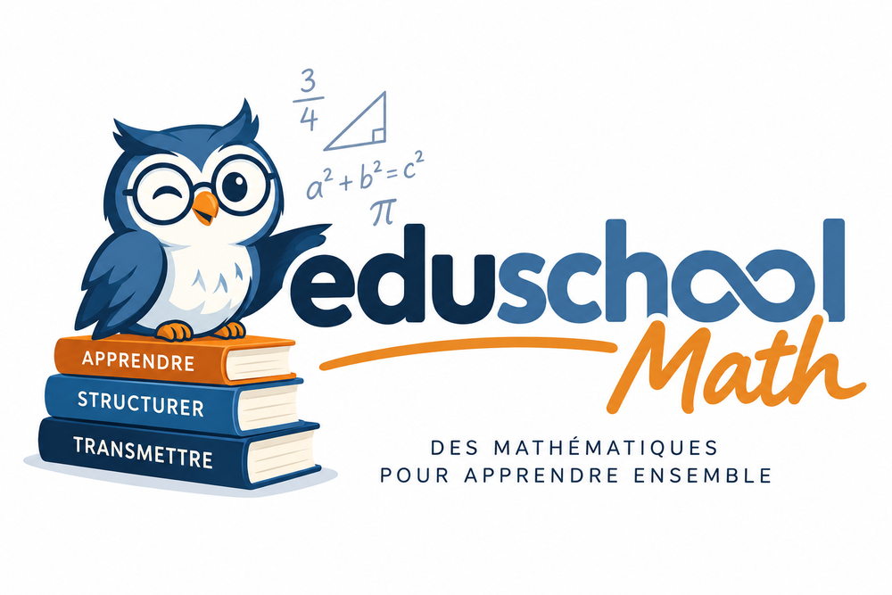

Consulter un programme scolaire
programme.Rd`programme()` fournit une vue directement exploitable des capacites d'un niveau et d'une discipline. Les fonctions [programmes()] et [capacites()] restent disponibles pour les consultations plus techniques.